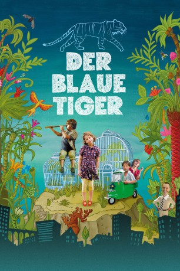

#2574 Der Blaue Tiger
 
 IMDB-Wertung: 6.5 / 10
IMDB-Wertung: 6.5 / 10  Metascore: 0
Metascore: 0 
Wie eine vergessene Insel liegt ein alter botanischer Garten inmitten einer lauten Stadt. Johanna (Linda Votrubová) lebt dort zusammen mit ihrer Mutter (Barbora Hrzánová) und ihrem besten Freund Mathias (Jakub Wunsch), dem Sohn des wortkargen Gärtners Blume (Jan Hartl). Johanna liebt die Pflanzen und Tiere, die ihr grünes Heim bevölkern. In ihrer Fantasie kann alles lebendig werden und wundersame Dinge passieren. Nur in der Schule hat sie es mit ihren Mitschülern und einer gemeinen Lehrerin nicht leicht. Als der fiese Bürgermeister Rýp (Daniel Drewes) den paradiesischen Garten abreißen lassen will, um dort ein Entertainmentcenter zu bauen, ist Johanna schockiert. Fieberhaft überlegen Mathias und sie wie man ihr Zuhause retten könnte. Da taucht eines Nachts ein kleiner, blauer Tiger in der Stadt auf und gefährdet die perfiden Pläne des Bürgermeisters ernsthaft. Es scheint, dass nur der Tiger den Garten vor dem Abriss bewahren kann.
Jahr: 2012
Dauer: 90 Minuten
FSK: 0
Land: Tschechische Republik Studio: Farbfilm VerleihTonspuren:
Untertitel:
Auflösung: 1080p (1920x1040) Größe: 6727 MB
Genre: Familie
Regisseur: Petr Oukropec, Bohdan Sláma
Drehbuch: Tereza Horváthová, Petr Oukropec
Soundtrack: Markus Aust, Jakub Kudlác
Darsteller:
- Hynek Cermák als Teacher
- Jan Hartl als Kytka
- Daniel Drewes als Mayor Rýp
- Tereza Bocková als Classmate
- Jana Brezková als Woman with Glasses
- Jirí Cerný als TV Electrician
- Anna Ctvrtnícková als Anicka
- Jana Drbohlavová als Woman with Dog
- Martin Faltýn als Docent
- Libuse Havelková als Grandmother of Anicka
- Valerie Rosa Hetzendorf als Krácmerka
- Barbora Hrzánová als Gerzová
- Vlastimil Kanka als Lukes
- Petra Lustigová als Teacher
- Mojmír Maderic als
- Jan Marsál als Zalabák
- Stepán Mikolás als Smíd
- Martin Mysicka als Man in Socks
- Zuzana Onufráková als Elegant Blonde
- Stanislav Pitonák als Krácmera
- Anna Polívková als TV Reporter
- René Pribil als Headmaster
- Krystof Rímský als
- Lukas Slatkovsky als
- Radim Vasinka als Podléska
- Jan Vondrácek als Architect
- Daniela Vorácková als Teacher
- Linda Votrubová als Johanka
- Lenka Vychodilová als San
- Jakub Wunsch als Matyás
- Jirí Zeman als TV Cameraman
- Magdalena Zimová als Postwoman
Datei: X:\2012(A-F)\Blaue Tiger, Der (2012, FSK0, 1920x1040).mkv seit 24.11.2015
Festplatte: HD 2012(A-M)
 Es gibt insgesamt 102 Filme in der Gruppe '2012(A-F)'
Es gibt insgesamt 102 Filme in der Gruppe '2012(A-F)'